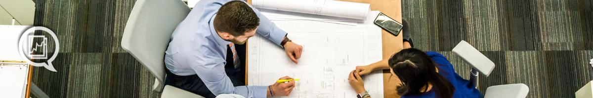
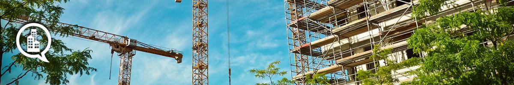
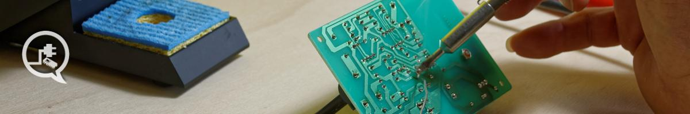
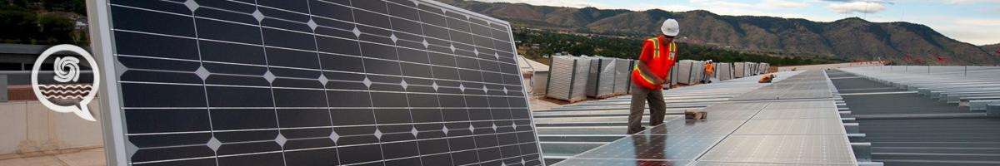
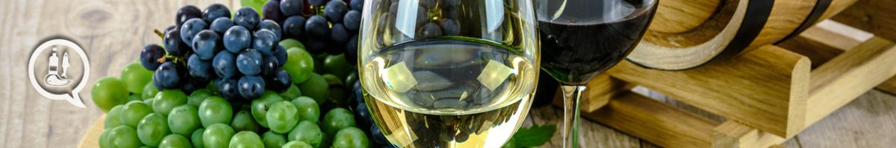
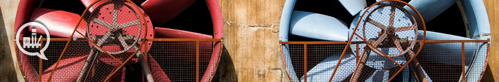

Todo
FP
Inicio
Información
Cursos
Alumnos
Ayuda
LOGIN
Actividades Físicas y Deportivas
Técnico Superior en Acondicionamiento Físico
Técnico Superior en Enseñanza y Animación Sociodeportiva
Administración y Gestión

Técnico Superior en Asistencia a la Dirección
Técnico Superior en Administración y Finanzas
Agraria
Técnico Superior en Paisajismo y Medio Rural
Técnico Superior en Gestión Forestal y del Medio Natural
Artes Gráficas
Técnico Superior en Diseño y Edición de Publicaciones Impresas y Multimedia
Técnico Superior en Diseño y Gestión de la Producción Gráfica
Edificación y Obra Civil

Técnico Superior en Proyectos de Edificación
Técnico Superior en Proyectos de Obra Civil
Técnico Superior en Organización y Control de Obras de Construcción
Electricidad y Electrónica

Técnico Superior en Sistemas Electrotécnicos y Automatizados
Técnico Superior en Mantenimiento Electrónico
Técnico Superior en Automatización y Robótica Industrial
Técnico Superior en Electromedicina Clínica
Energía y Agua

Técnico Superior en Eficiencia Energética y Energía Solar
Térmica
Técnico Superior en Gestión del Agua
Técnico Superior en Energías Renovables
Fabricación Mecánica
Técnico Superior en Programación de la Producción en Fabricación Mecánica
Técnico Superior en Construcciones Metálicas
Técnico Superior en Diseño en Fabricación Mecánica
Técnico Superior en Óptica de Anteojería
Hostelería y Turismo
Técnico Superior en Gestión de Alojamientos Turísticos
Técnico Superior en Agencias de Viajes y Gestión de Eventos
Técnico Superior en Dirección de Cocina
Técnico Superior en Dirección de Servicios en Restauración
Imagen Personal
Técnico Superior en Estética Integral y Bienestar
Técnico Superior en Termalismo y Bienestar
Imagen y Sonido
Técnico Superior en Animaciones 3D, Juegos y Entornos Interactivos
Técnico Superior en Realización de Proyectos Audiovisuales y Espectáculos
Técnico Superior en Producción de Audiovisuales y Espectáculos
Técnico Superior en Sonido para Audiovisuales y Espectáculos
Industrias Alimentarias

Técnico Superior en Vitivinicultura
Técnico Superior en Procesos y Calidad en la Industria Alimentaria
Informática y Comunicaciones
Técnico Superior en Administración de Sistemas Informáticos en Red
Técnico Superior en Desarrollo de Aplicaciones Multiplataforma
Técnico Superior en Desarrollo de Aplicaciones Web
Instalación y Mantenimiento

Técnico Superior en Mantenimiento de Instalaciones Térmicas y de Fluidos
Técnico Superior en Mecatrónica Industrial
Madera, Mueble y Corcho
Técnico Superior en en Diseño y Amueblamiento
Química
Técnico Superior en Laboratorio de Análisis y Control de Calidad
Técnico Superior en Química Industrial
Técnico Superior en Fabricación de Productos Farmacéuticos, Biotecnológicos y Afines
Sanidad
Técnico Superior en Audiología Protésica
Técnico Superior en Imagen para el Diagnóstico y Medicina Nuclear
Servicios Socioculturales y a la Comunidad
Técnico Superior en Educación Infantil
Técnico Superior en Animación Sociocultural y Turística
Técnico Superior en Integración Social
Técnico Superior en Mediación Comunicativa
Textil, Confección y Piel
Técnico Superior en Patronaje y Moda
Técnico Superior en Vestuario a medida y de espectáculos
Transporte y Mantenimiento de Vehículos
Técnico Superior en Automoción
Técnico Superior en Mantenimiento Aeromecánico de Aviones con Motor Turbina
Técnico Superior en Mantenimiento de Sistemas Electrónicos y Aviónicos en Aeronaves